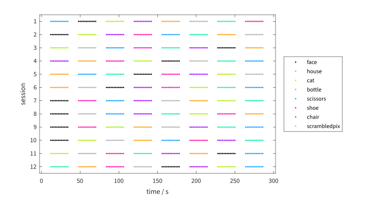
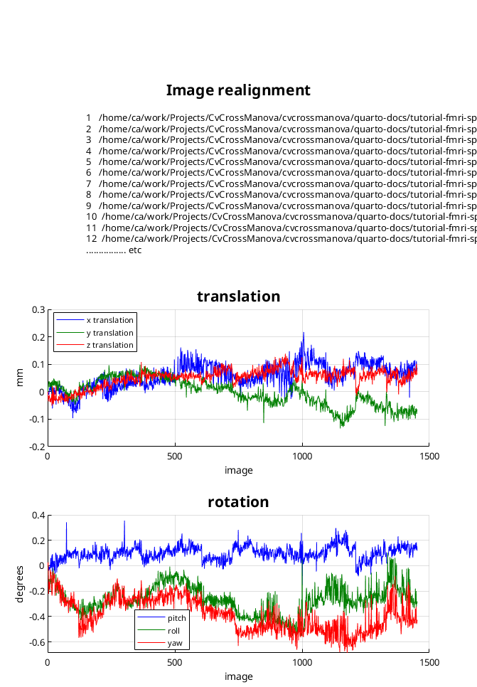

% select subject
sub = 'subj1';Preparation
Data are downloaded, preprocessed, and design information extracted
Download and unpack data
The data for the subject are downloaded from PyMVPA as a .tar.gz archive, and the archive is unpacked.
fn = [sub '-2010.01.14.tar.gz'];
url = ['http://data.pymvpa.org/datasets/haxby2001/' fn];
urlwrite(url, fn);
untar(fn)
delete(fn)The included NIfTI images are individually gzip-compressed and need to be uncompressed.
files = dir(fullfile(sub, '*.nii.gz'));
for i = 1 : numel(files)
fprintf('uncompressing %s\n', files(i).name)
gunzip(fullfile(sub, files(i).name))
delete(fullfile(sub, files(i).name))
enduncompressing anat.nii.gz
uncompressing bold.nii.gz
uncompressing mask4_vt.nii.gz
uncompressing mask8_face_vt.nii.gz
uncompressing mask8_house_vt.nii.gz
uncompressing mask8b_face_vt.nii.gz
uncompressing mask8b_house_vt.nii.gzThe mask images are not documented in detail. Based on the filenames and the in-mask volume, we assume the following correspondence between regions listed in Table 1 of the paper and mask image files:
mask4_vt.nii- ‘all ventral temporal object-selective cortex’
mask8b_face_vt.nii- ‘region maximally responsive to faces’
mask8b_house_vt.nii- ‘region maximally responsive to houses’
Caution
TODO: do they need to be aligned to the anatomical or the mean BOLD image?
fnBOLD = fullfile(sub, 'bold.nii');
regions = {fullfile(sub, 'mask4_vt.nii'), ...
fullfile(sub, 'mask8b_face_vt.nii'), ...
fullfile(sub, 'mask8b_house_vt.nii')};Obtain experimental design information
The BOLD data are contained in a single 4-dimensional NIfTI file.
N = nifti(fnBOLD);
size(N.dat)
diag(N.mat(1:3, 1:3))'
TR = N.timing.tspaceans =
40 64 64 1452
ans =
-3.5 3.75 3.75
TR =
2.5This file contains a timeseries of 1452 scans at at repetition time of 2.5 s, each of which has 40 × 64 × 64 voxels of size 3.5 × 3.75 × 3.75 mm.
From Footnote 18 of the paper:
Stimuli were gray-scale images of faces, houses, cats, bottles, scissors, shoes, chairs, and nonsense patterns. … Twelve time series were obtained in each subject. Each time series began and ended with 12 s of rest and contained eight stimulus blocks of 24-s duration, one for each category, separated by 12-s intervals of rest. Stimuli were presented for 500 ms with an interstimulus interval of 1500 ms.
Each of the 12 sessions therefore had a duration of (12 + 24) × 8 + 12 = 300 s, corresponding to 120 TRs (121 scans).
Information about the onsets and durations of stimuli in this subject are contained in a file labels.txt.
labels = readtable(fullfile(sub, 'labels.txt'), 'Delimiter', ' ');
head(labels) labels chunks
____________ ______
{'rest' } 0
{'rest' } 0
{'rest' } 0
{'rest' } 0
{'rest' } 0
{'rest' } 0
{'scissors'} 0
{'scissors'} 0 tail(labels) labels chunks
____________ ______
{'scissors'} 11
{'scissors'} 11
{'rest' } 11
{'rest' } 11
{'rest' } 11
{'rest' } 11
{'rest' } 11
{'rest' } 11 It has 1452 rows, corresponding to the scans of the BOLD data. The format is not documented, but it appears that the column labels contains the experimental condition (stimulus type), and the column chunk distinguishes the 12 sessions by an index from 0 to 11, each with 121 rows. In the order of the paper, the condition names are
conditions = ["face", "house", "cat", "bottle", ...
"scissors", "shoe", "chair", "scrambledpix"];plus "rest" for the rest intervals.
Stimulus blocks comprise 9 rows with rest intervals of 5 or 6 rows, which does not exactly correspond to the description above because the stimulus presentation length is incompatible with the TR. We therefore use these data only to extract the condition index for each block, but recreate more precise stimulus timing information.
nSessions = 12;
nConds = numel(conditions);
onsets = cell(nSessions, nConds);
durations = cell(nSessions, nConds);
% for each session
for si = 1 : nSessions
% extract condition for each block (from its middle)
cond = labels.labels(labels.chunks == si - 1);
[~, condInd] = ismember(cond, conditions);
condInd = condInd(round((24 :(12 + 24): 300) / TR) + 1);
assert(isequal(sort(condInd).', 1:8))
% for each condition
for ci = 1 : nConds
% assemble stimulus onset and duration information in s
blockInd = find(condInd == ci);
blockStart = (blockInd - 1) * (12 + 24) + 12;
onsets{si, ci} = blockStart + (0 : 11) * (0.5 + 1.5);
durations{si, ci} = 0.5 * ones(1, 12);
end
end
nVolsPerSession = height(labels) / nSessions;Visualization of stimulus onsets in each session:
fig = figure;
fig.Position(3:4) = [750, 400];
colors = ["#000000", "#ff9b00", "#a6ee00", "#00eea6", ...
"#009bff", "#a600ff", "#ff00a6", "#aaaaaa"];
for ci = 1 : nConds
ons = [];
ses = [];
for si = 1 : nSessions
ons = [ons, onsets{si, ci}];
ses = [ses, si * ones(size(onsets{si, ci}))];
end
plot(ons, ses, '.', 'Color', colors(ci))
hold all
end
xlim([-1 , nVolsPerSession] * TR)
ylim([0.5, nSessions + 0.5])
set(gca, 'YTick', 1 : nSessions)
set(gca, 'YDir', 'reverse')
ylabel('session')
xlabel('time / s')
legend(conditions, Location="eastoutside")

Realign BOLD data
fnrBOLD = fullfile(sub, 'rbold.nii');
matlabbatch = {};
for si = 1 : nSessions
vi = (si - 1) * nVolsPerSession + (1 : nVolsPerSession);
vn = arrayfun(@(i) sprintf('%s,%d', fnBOLD, i), ...
vi, 'UniformOutput', false);
matlabbatch{1}.spm.spatial.realign.estwrite.data{si} = vn';
end
matlabbatch{1}.spm.spatial.realign.estwrite.eoptions.quality = 0.9;
matlabbatch{1}.spm.spatial.realign.estwrite.eoptions.sep = 4;
matlabbatch{1}.spm.spatial.realign.estwrite.eoptions.fwhm = 5;
matlabbatch{1}.spm.spatial.realign.estwrite.eoptions.rtm = 1;
matlabbatch{1}.spm.spatial.realign.estwrite.eoptions.interp = 2;
matlabbatch{1}.spm.spatial.realign.estwrite.eoptions.wrap = [0 0 0];
matlabbatch{1}.spm.spatial.realign.estwrite.eoptions.weight = '';
matlabbatch{1}.spm.spatial.realign.estwrite.roptions.which = [2 1];
matlabbatch{1}.spm.spatial.realign.estwrite.roptions.interp = 4;
matlabbatch{1}.spm.spatial.realign.estwrite.roptions.wrap = [0 0 0];
matlabbatch{1}.spm.spatial.realign.estwrite.roptions.mask = 1;
matlabbatch{1}.spm.spatial.realign.estwrite.roptions.prefix = 'r';
set(spm_figure('GetWin', 'Graphics'), 'Visible', 'off')
spm_jobman('run', matlabbatch)Initialising batch system... done.
------------------------------------------------------------------------
28-Oct-2023 19:37:53 - Running job #1
------------------------------------------------------------------------
28-Oct-2023 19:37:53 - Running 'Realign: Estimate & Reslice'
SPM12: spm_realign (v7141) 19:37:53 - 28/10/2023
========================================================================
Warning: PostScript format 'psc2' will not be supported in a future release.
> In inputcheck
In print (line 41)
In spm_print (line 99)
In spm_realign>plot_parameters (line 527)
In spm_realign (line 168)
In spm_run_realign (line 31)
In cfg_run_cm (line 29)
In cfg_util>local_runcj (line 1717)
In cfg_util (line 972)
In spm_jobman>fill_run_job (line 469)
In spm_jobman (line 247)
Printing 'Graphics' figure to:
/home/ca/work/Projects/CvCrossManova/cvcrossmanova/quarto-docs/tutorial-fmri-spm/spm_2023Oct28.ps
Completed : 19:42:36 - 28/10/2023
SPM12: spm_reslice (v7141) 19:42:36 - 28/10/2023
========================================================================
Completed : 19:44:37 - 28/10/2023
28-Oct-2023 19:44:37 - Done 'Realign: Estimate & Reslice'
28-Oct-2023 19:44:37 - Done

Save information
save(fullfile(sub, 'info.mat'), 'regions', 'TR', 'nSessions', ...
'nVolsPerSession', 'conditions', 'nConds', 'onsets', 'durations', 'colors')